SVG: scalable vector originals. PNG: raster originals. Select an asset to open its master file.
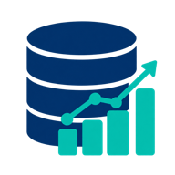
데이터베이스 인포그래픽data-01-database · PNG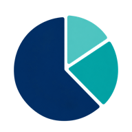
원형차트 인포그래픽data-02-pie-chart · PNG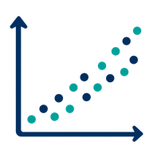
산점도 인포그래픽data-03-scatterplot · PNG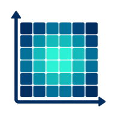
히트맵 인포그래픽data-04-heatmap · PNG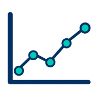
선차트 인포그래픽data-06-line-chart · PNG대시보드 인포그래픽data-08-dashboard · PNG표 인포그래픽data-09-table-grid · PNG벤다이어그램 인포그래픽data-10-venn · PNG네트워크 인포그래픽data-11-network-graph · PNG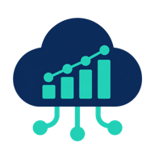
클라우드데이터 인포그래픽data-12-cloud-data · PNG데이터흐름 인포그래픽data-13-data-stream · PNG파일묶음 인포그래픽data-14-stacked-files · PNG데이터정제 인포그래픽data-15-data-cleaning · PNG세분화 인포그래픽data-16-segmentation · PNG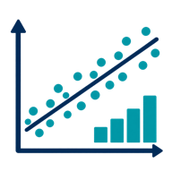
상관관계 인포그래픽data-17-correlation · PNG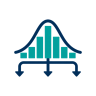
분포 인포그래픽data-18-distribution · PNG데이터접근 인포그래픽data-19-data-key · PNG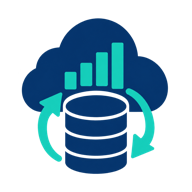
백업 인포그래픽data-20-backup · PNG잎 인포그래픽environment-01-leaf · PNG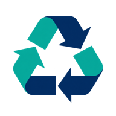
재활용 인포그래픽environment-02-recycling · PNG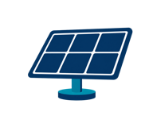
태양광 인포그래픽environment-03-solar-panel · PNG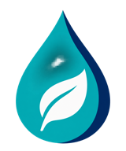
물방울 인포그래픽environment-06-water-drop · PNG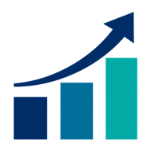
상승 화살표와 세 개의 막대growth-01-ascending-bars · PNG기어를 담은 전구innovation-01-bulb-gear · PNG마이크를 들고 연단 옆에 선 발표자people-01-presenter · PNG멘토 인포그래픽people-02-mentor · PNG디자이너 인포그래픽people-06-designer · PNG분석가 인포그래픽people-07-analyst · PNG기술자 인포그래픽people-09-technician · PNG원격근무자 인포그래픽people-11-remote-worker · PNG리더 인포그래픽people-13-leader · PNG봉사자 인포그래픽people-14-volunteer · PNG구직자 인포그래픽people-16-job-seeker · PNG컨설턴트 인포그래픽people-17-consultant · PNG운영자 인포그래픽people-18-operator · PNG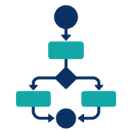
워크플로 인포그래픽process-01-workflow-nodes · PNG순환 인포그래픽process-02-cycle-arrows · PNG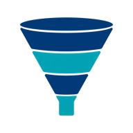
깔때기 인포그래픽process-03-funnel · PNG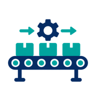
컨베이어 인포그래픽process-04-conveyor · PNG체크리스트 인포그래픽process-05-checklist · PNG기어 인포그래픽process-06-gear-pair · PNG분기병합 인포그래픽process-07-branch-merge · PNG승인 인포그래픽process-08-approval-stamp · PNG대기열 인포그래픽process-09-queue · PNG모래시계 인포그래픽process-10-hourglass · PNG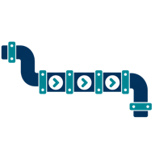
파이프라인 인포그래픽process-11-pipeline · PNG칸반 인포그래픽process-12-kanban · PNG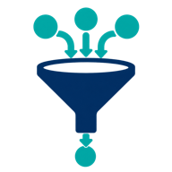
필터 인포그래픽process-13-filter · PNG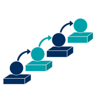
단계 인포그래픽process-15-steps · PNG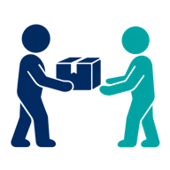
인계상자 인포그래픽process-16-handoff-box · PNG품질관문 인포그래픽process-17-quality-gate · PNG초시계 인포그래픽process-18-stopwatch · PNG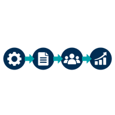
의존관계 인포그래픽process-19-dependency-chain · PNG자동화 인포그래픽process-20-automation-arm · PNG중앙에 화살이 꽂힌 목표물strategy-01-target · PNG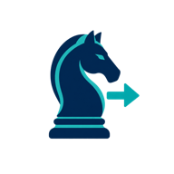
방향 화살표 옆의 체스 나이트strategy-02-knight · PNG청록색 바늘이 있는 나침반strategy-03-compass · PNG노트북 벡터 인포그래픽technology-01-laptop · SVG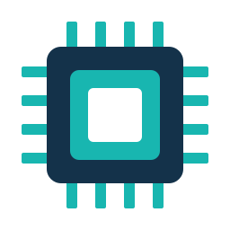
반도체 벡터 인포그래픽technology-02-microchip · SVG스마트폰 벡터 인포그래픽technology-03-smartphone · SVG클라우드 벡터 인포그래픽technology-04-cloud-computing · SVG코딩 벡터 인포그래픽technology-05-code-window · SVG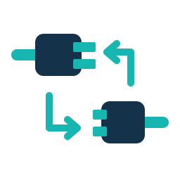
인터페이스 벡터 인포그래픽technology-06-api-plugs · SVG가상현실 벡터 인포그래픽technology-07-vr-headset · SVG센서 벡터 인포그래픽technology-08-sensor · SVG로봇팔 벡터 인포그래픽technology-09-robot-arm · SVG저장장치 벡터 인포그래픽technology-10-usb-drive · SVG